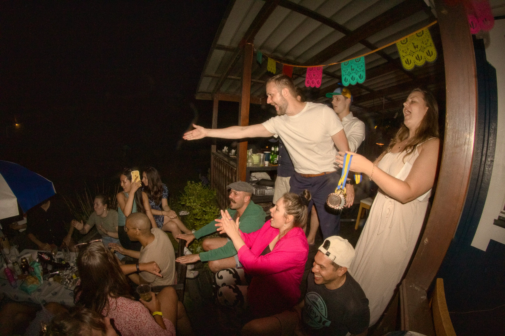

Expressions at 8mm
In 2021, I purchased a
Samyang 8mm Manual Wide-Angle lens for my
EF-mount camera. Most lenses allow me to hide behind the camera.
A 50 or a 200 would let me observe from a safe
distance, capturing candid moments without altering
the room's chemistry.
The 8mm destroys that distance for me.
It has a bulbous, protruding front element that looks less
like a traditional camera and more like a massive glass eye.
When I point it at someone, they can’t ignore it. The
resulting poses are a mix of natural and performative,
but always exaggerated by design, while being deeply aware of the machine & human in front of them.
I have to invade personal space, often standing just inches away from people.
I find this proximity so fascinating. I love it when I can see them leaning into
the lens distortion, throwing their hands out, tilting their heads, my lens literally bending
light in front of me. This record is a series of these light-bending images, from photoshoots at Pax et Bellum dinner parties, to Midsommar celebrations, and my best friends casually posing on a street corner in Copenhagen.

A Pause in Copenhagen
Our last morning in Copenhagen was spent walking the high streets in pursuit of Guinness. As Rasmus made attempts to chart a course back to the larger group, Tien stepped into the frame of the 8mm, looking exactly as effortlessly badass as she always does.


Gask På Västgöta
My second time photographing the Pax et Bellum semester dinner with the setting shifted to the beautiful, historic halls of Västgöta Nation. While the architecture demanded a certain formality, the evening quickly dissolved into something much warmer. It was a night defined by loud celebrations, smooth dancing, and the realization that the humanitarians throw the best parties in Uppsala.


Baras Enkelt
Enkelt was my introduction to the Baras locations in Stockholm. It became a permanent fixture during my night outs, mainly for its cozy atmosphere. The lighting in there was impossibly dim, and forcing an 8mm lens with an f/3.5 limit into that darkness was a constant struggle. Nevertheless, fascinated by the bulbous lens, Thomas and Giorgios couldn't stop performing for the camera.


Midsommar '23
That Midsommar, we were all together. I will always be grateful the 8mm was there to document it. The proximity required by the lens didn't distort the emotion, instead it magnified our final, unfiltered expressions. It is a visual testament to our pure joy, that we were living entirely in the present, celebrating as if it were our last night together.

